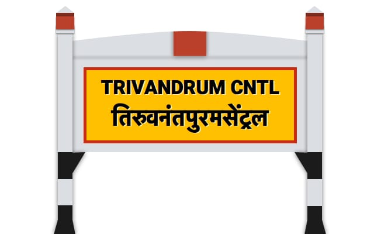

I
THIRUVANANTHAPURAM
Thiruvananthapuram , commonly known by its former name Trivandrum /trɪˈvændrəm/, is the capital of the Indian state of Kerala. It is the most populous city in Kerala with a population of 957,730 as of 2011. The encompassing urban agglomeration population is around 1.68 million. Located on the west coast of India near the extreme south of the mainland, Thiruvananthapuram is a major information technology hub in Kerala and contributes 55% of the state's software exports as of 2016. Referred to by Mahatma Gandhi as the "Evergreen city of India", the city is characterised by its undulating terrain of low coastal hills. The present regions that constitute Thiruvananthapuram were ruled by the Ays until their fall in the 10th century. The city was then taken over by the Chera dynasty. In the 12th century, it was conquered by the Kingdom of Venad. In the 18th century the king Marthanda Varma expanded the territory and founded the princely state of Travancore and made Thiruvananthapuram its capital. Travancore became the most dominant state in Kerala by defeating the powerful Zamorin of Kozhikode in the battle of Purakkad in 1755. Following India's independence in 1947, Thiruvananthapuram became the capital of Travancore-Cochin state and remained so till the new Indian state of Kerala was formed in 1956. Thiruvananthapuram is a notable academic and research hub and home to the University of Kerala, Kerala Technological University, the regional headquarters of Indira Gandhi National Open University, and many other schools and colleges. Thiruvananthapuram is also home to research centers such as the National Institute for Interdisciplinary Science and Technology, Indian Space Research Organisation's Vikram Sarabhai Space Centre, the Indian Institute of Space Science and Technology, National Centre for Earth Science Studies and a campus of the Indian Institutes of Science Education and Research

SHANKUMUGHAM BEACH
Shankumugham Beach is a beach in Thiruvananthapuram district of Kerala, south India. The beach is on the western side of Thiruvananthapuram (Trivandrum) and very near to Trivandrum International Airport. The vast stretch of white sand and the serene atmosphere, away from the crowd in the city, provide all the ingredients for relaxation and for spending an ideal evening

NAPIER MUSEUM
Napier Museum Welcome to the treasure house of ancient culture and legacy of God's Own Country that lies in the heart of the capital city. With its august structure and exclusive collection of artifacts, Napier Museum stands apart from other heritage structures. Recreating history, this regal edifice offers a glimpse into the past.

THIRUVANANTHAPURAM ZOO
Thiruvananthapuram Zoo is one of the oldest Zoo in India. Similarly the Museum and Botanical Gardens are also one of the oldest of their kind in the country. Swathi Thirunal Rama Varma(1816-1846), the ruler of Travancore during 1830-1846, was the visionary behind the establishment of the Thiruvananthapuram Museum and Zoo.He had a broad variety of animals, including elephants in his horse breeding centre